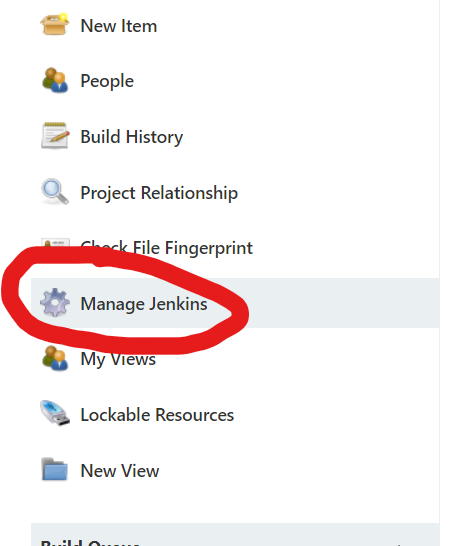
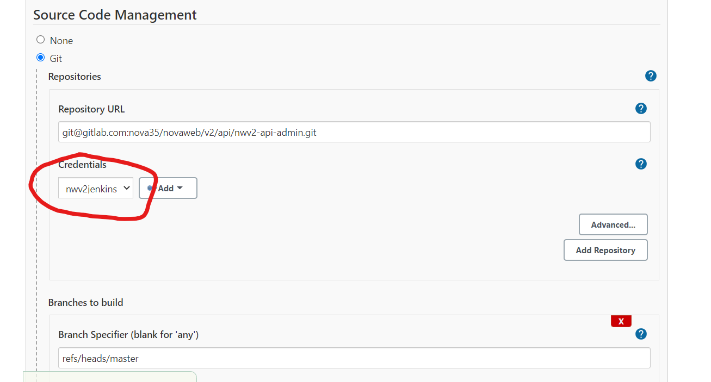
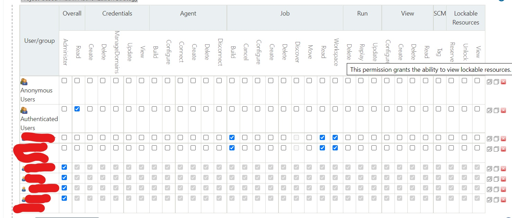

Managing Jenkins
Creation and management of jobs is out of the scope of this guide, so that is something you'll have to explore on your own.
This guide aims to cover certain configurations that may be vital to Jenkins being operational, and where to find them.
If you have been granted administrative access, this button should be available to you:

This is where all management options are grouped under.
Important
Barebones Jenkins is very configurable, but it does not provide a lot of QOL features.
It is very easy to mess up, accidentally delete jobs/users, provide wrong permission to the wrong people, or simply just render the server unusable. So beware.
Updating git Credentials
Git credentials(rsa ssh keys) can be found under:
Manage Jenkins > Manage Credentials
After which the key will be available for selection during jobs configuration:

Access Control
Manage Jenkins > Configure Global Security
Under Authorization, make sure Project-based Matrix Authorization Strategy is checked.

You can hover over individual permissions to see a description of them.
This can be configured per jobs/folder as well.
IMPORTANT!!
Be careful not to remove administrative permission from yourself/everyone if it would result in no one having admin rights. This is irreversible and Jenkins would be left without admins. The only way to remedy this is to SSH into the instance, and reset Jenkins backing data store manually.
Jenkins CLI
Jenkins provides a CLI for easier management when it comes to batch creating/updating jobs.
It can be done with jenkins-cli.jar, over SSH, HTTP, or even Websockets.
This makes jobs duplication a lot safer.
There are also libraries that wraps the CLI calls for you, like this one.
Jenkins jobs are saved in XML, meaning you can export them and perform your choice of version
control if you so wish.
New Users
There are 2 ways for adding new users:
- Manage Jenkins > Manage Users > Create User
- Provide username and password to users
- Users can then set a new password by:
- Clicking on their avatar icon on the top right
- Click
Configure
- Manage Jenkins > Configure Global Security
- Check
Allow users to sign upunderSecurity Realm
- Check
Resetting a user's password
Manage Jenkins > Manage Users > Select username > Configure